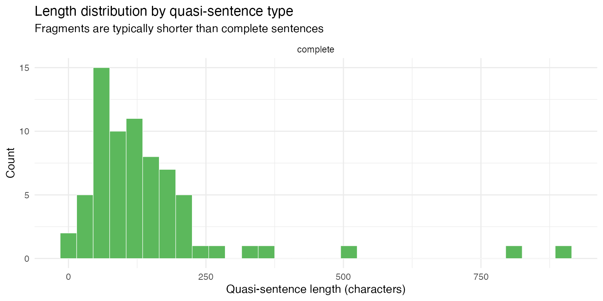

Example: Quasi-sentence segmentation (test)
Segmenting party
manifestos using Manifesto Project rules with
qlm_segment()
example_quasi_sentences_test.RmdThe Manifesto Project codes party manifestos by segmenting them into quasi-sentences — the smallest units carrying a single, complete political statement. A quasi-sentence is at minimum one natural sentence, but a sentence may be split into multiple quasi-sentences when it contains two or more unique arguments. Applying these rules requires judgment: when are two clauses genuinely independent claims versus elaborations of a single point? This is exactly the kind of nuanced, instruction-following task where LLMs can serve as a scalable alternative to human coding.
This article uses qlm_segment() to apply the Manifesto
Project quasi-sentence rules to the 1983 UK Liberal-SDP Alliance
election manifesto, and evaluates how faithfully the model follows the
handbook instructions.
The data
The manifesto text is provided as the Liberal_SDP_1983
document in data_corpus_MPexamples, a two-document corpus
of Manifesto Project example texts included in quallmer.
lib_corp <- corpus_subset(data_corpus_MPexamples, country == "UK")
cat(substr(lib_corp, 1, 500), "...\n")
#> ‘Working together for Britain' The General Election on June 9th, 1983 will be seen as a watershed in British politics. It may be recalled as the fateful day when depression became hopelessness and the slide of the post-war years accelerated into the depths of decline. Alternatively it may be remembered as the turning point when the people of this country, at the eleventh hour, decided to turn their backs on dogma and bitterness and chose a new road of partnership and progress. It is to offer rea ...The codebook
The codebook instructions are the verbatim text of section 3.2 (“Unitising — Cutting Text into Quasi-Sentences”) from the Manifesto Project coding handbook (Burst et al., 2021), including the rules for when to cut and when not to cut, the worked example, and the expected output. We load the file at runtime and append a short tail telling the model how to format its output.
qs_instructions <- paste(
readLines("data/quasi-sentences/instructions_test.txt"),
collapse = "\n"
)
cb_qs <- qlm_codebook(
name = "Manifesto Project quasi-sentence segmentation",
instructions = paste(
qs_instructions,
"",
"Return every quasi-sentence in document order.",
"Each returned 'text' must be verbatim text copied exactly from the input.",
"Section headers (capitalised lines without end-of-sentence punctuation)",
"should be joined to the first sentence that follows them.",
"Mark whether each quasi-sentence is a COMPLETE natural sentence or a FRAGMENT",
"cut from a larger natural sentence.",
sep = "\n"
),
schema = ellmer::type_object(
sentence_type = ellmer::type_enum(
c("complete", "fragment"),
description = paste(
"Whether this quasi-sentence is a complete natural sentence ('complete')",
"or a fragment cut from a larger natural sentence that was split ('fragment')"
)
),
reason = ellmer::type_string("Rule governing the segmentation decision.")
),
role = "You are an expert political science coder trained in the Manifesto Project methodology."
)
cb_qs
#> quallmer codebook: Manifesto Project quasi-sentence segmentation
#> Input type: text
#> Role: You are an expert political science coder trained in the Man...
#> Instructions: 3.2 Unitising - Cutting Text into Quasi-Sentences
#>
#> The codin...
#> Output schema:ellmer::TypeObject
#> Levels:
#> sentence_type: nominal
#> reason: nominalSegmenting the manifesto
segs_manifesto <- qlm_segment(
lib_corp,
codebook = cb_qs,
model = "openai/gpt-5.1",
name = "GPT 5.1"
)
saveRDS(segs_manifesto, "data/segs_manifesto_lib.rds")Results
All quasi-sentences
The model produced 70 quasi-sentences from the manifesto. The full
segmentation is shown below. Each quasi-sentence is numbered, labelled
by type (complete or fragment), and displayed
on its own line.
dv <- docvars(segs_manifesto) |>
mutate(text = as.character(segs_manifesto))
cat(sprintf("**%d.** _%s_\n> %s\n\n", dv$segid, dv$sentence_type, dv$text))1. complete > ‘Working together for Britain’ The General Election on June 9th, 1983 will be seen as a watershed in British politics.
2. complete > It may be recalled as the fateful day when depression became hopelessness and the slide of the post-war years accelerated into the depths of decline.
3. complete > Alternatively it may be remembered as the turning point when the people of this country, at the eleventh hour, decided to turn their backs on dogma and bitterness and chose a new road of partnership and progress.
4. complete > It is to offer real hope of a fresh start for Britain that the Alliance between our two parties has been created.
5. complete > What we have done is unique in the history of British parliamentary democracy.
6. complete > Two parties, one with a proud history, and one born only two years ago out of a frustration with the old systems of politics, have come together to offer an alternative government pledged to bring the country together again.
7. complete > The Conservative and Labour parties between them have made an industrial wasteland out of a country which was once the workshop of the world.
8. complete > Manufacturing output from Britain is back to the level of nearly 20 years ago.
9. complete > Unemployment is still rising and there are now generations of school-leavers who no longer even hope for work.
10. complete > Mrs Thatcher’s government stands idly by, hoping that the blind forces of the marketplace will restore the jobs and factories that its indifference has destroyed.
11. complete > The Labour Party’s response is massive further nationalization, a centralised state socialist economy and rigid controls over enterprise.
12. complete > The choice which Tories and socialists offer at this election is one between neglect and interference.
13. complete > Neither of them understands that it is only by working together in the companies and communities of Britain that we can overcome the economic problems which beset us.
14. complete > Meanwhile the very fabric of our common life together deteriorates.
15. complete > The record wave of violence and crime and increased personal stress are all signs of a society at war with itself.
16. complete > Rundown cities and declining rural services alike tell a story of a warped sense of priorities by successive governments.
17. complete > Mrs Thatcher promised ‘to bring harmony where there is discord’.
18. complete > Instead her own example of confrontation has inflamed the bitterness so many people feel at what has happened to their own lives and local communities.
19. complete > Our Alliance wants to call a halt to confrontation politics.
20. complete > We believe we have set an example by working together as two separate parties within an alliance of principle.
21. complete > Our whole approach is based on co-operation: not just between our parties but between management and workers, between people of different races and above all between government and people.
22. complete > Because we are not prisoners of ideology we shall listen to the people we represent and ensure that the good sense of the voters is allowed to illuminate the corridors of Westminster and Whitehall.
23. complete > THE IMMEDIATE CRISIS: JOBS AND PRICES Our economic crisis demands tough immediate action.
24. complete > It also requires a Government with the courage to implement those strategic and structural reforms which alone can end the civil war between the two sides of industry.
25. complete > The immediate priority is to reduce unemployment.
26. complete > Why?
27. complete > To the Alliance unemployment is a scandal; robbing men and women of their careers; blighting the prospects for a quarter of all our young people, wasting our national resources, aborting our chances of industrial recovery, dividing our nation and fuelling hopelessness and crime.
28. complete > Much of the present unemployment is a direct result of the civil war in British industry, of restrictive practices and low investment.
29. complete > But in addition, conservative Government policies have caused unemployment to rise.
30. complete > An Alliance Government would cause unemployment to fall.
31. complete > How?
32. complete > Can it be done without releasing a fresh wave of inflation?
33. complete > We believe it can.
34. complete > We propose a carefully devised and costed jobs programmeme aimed at reducing unemployment by 1 million over two years.
35. complete > This programmeme will be supported by immediate measures to help those hardest hit by the slump - the disadvantaged, the pensioners, the poor.
36. complete > Ours is a programmeme of mind, heart and will.
37. complete > It is a programme that will work!
38. complete > The Programmeme has three points: Fiscal and Financial Pollicies for Growth; Direct Action to provide jobs; An Incomes Strategy that will stick.
39. complete > STRATEGY FOR INDUSTRIAL SUCCESS The Alliance is alone in recognising that Britain’s industrial crisis cannot be solved by short-term measures such as import controls or money supply targets.
40. complete > Our crisis goes deep.
41. complete > Its roots lie in the class divisions of our society, in the vested interests of the Tory and Labour parties, in the refusal of management and unions to wide democracy in industry, in the way profits and risks are shared.
42. complete > The policies offered by the two class-based parties will further divide the nation North v South, Management v Labour.
43. complete > Our greatest need is to build a sense of belonging to one community.
44. complete > We are all in it together.
45. complete > It is impossible for one side or the other in Britain to ‘win’.
46. complete > Conflict in industrial relations means that we all lose.
47. complete > The Alliance is committed to policies which will invest resources in the hightechnology industries of the future.
48. complete > We are committed to a major new effort in education and training.
49. complete > We are pledged to trade union reform to tough anti-monopoly measures.
50. complete > PARTERNSHIP IN INDUSTRY Britain has made little progress towards industrial democracy, yet several of our European partners have long traditions of participation and co-operation backed by legislation.
51. complete > They do not face the obstacles to progress with which our divisive industrial relations present us.
52. complete > To be fully effective, proposals for participation in industry need to be buttressed by action on two fronts: a major extension of profit sharing and worker share-ownership to give people a real stake where they work as well as the ability to participate in decision-taking, and reform of the trade unions to make them genuinely representative institutions.
53. complete > PARTICIPATION AT WORK We propose enabling legislation that will offer a flexible and sensible approach: An Industrial Democracy Act to provide for the introduction of employee participation at all levels, incentives for employee share-ownership, employee rights to information, and an Industrial Democracy Agency (IDA) to advise on and monitor the introduction of these measures: Employee Councils covering each place of work (subject to exemption for small units) for all companies employing over 1,000 people.
54. complete > Smaller companies would also be encouraged to introduce Employee Councils.
55. complete > GOVERNMENT AND INDUSTRY Priority for Industry The role of an Alliance government in relation to private industry will be to provide selective assistance taking a number of forms: an industrial credit scheme to provide low-interest, long-term finance for projects directed at modernising industry; A national innovation policy, to provide selective assistance for high-risk projects, particularly involving the development of new technologies and for research and development in potential growth industries; public purchasing policies to stimulate innovation, encourage the introduction of crucial technologies and aid small businesses; we will establish a Cabinet Committee chaired by the Prime Minster at the centre of decision-taking on all policies with a bearing on the performance of industry.
56. complete > The Alliance will strengthen the Monopolies’ and Mergers’ Commission to ensure its ability to prevent monopoly and unhealthy concentrations of industrial and commercial power.
57. complete > The aim is to guarantee fair competition and to protect the interests of employers, consumers and shareholders.
58. complete > New and Small Business To encourage the growth of new and small businesses, we will attack red tape and provide further financial and management assistance by: extending the Loan Guarantee Scheme, in the first instance raising the maximum permitted loan to £150,000; and the Business Start-Up Scheme, raising the upper limit for investment to £75,000; and introducing Small Firm Investment Companies to provide financial and management help; zero-rating building repairs and maintenance for VAT purposes and reducing commercial rates by 10 per cent; making sure the Department of Industry co-ordinates and publicises schemes for small businesses and that government aid ceases to discriminate against small businesses; tailoring national legislation such as the Health and Safety Regulations to the needs of small businesses and amending the statutory sick pay scheme to exclude small businesses.
59. complete > Agriculture and Fisheries Agriculture is an important industry and employer.
60. complete > To encourage its further development we will: increase Government support for effective agricultural marketing at home and abroad and continue support for ‘Food from Britain’; ensure that agriculture has access like other industries to the industrial credit scheme we propose; encourage greater access to farming, especially by young entrants.
61. complete > The Alliance is determined to safeguard the future of our fishing industry which needs help to re-build after years of uncertainty and the drastic consequences for the deep-sea fleet of 200-mile limits in the waters they used to fish.
62. complete > Education and training The third basic condition for industrial success is a people with the skills and self-confidence that will be needed for the challenges of new technology.
63. complete > The education and training systems are not providing enough people with the skills necessary to make them employable and the country successful in competition with its rivals.
64. complete > We are falling further behind.
65. complete > Japan on present plans will be educating all its young people to the age of 18 by 1990.
66. complete > More than 90 per cent of the 16-19 age group in Germany gain recognised technical qualifications.
67. complete > And it is not just a matter of school-leavers.
68. complete > Our managers are less professionally qualified than our main competitors.
69. complete > From the bottom to top we are underskilled, and this has to be put right if we are to prosper in future.
70. complete > To do this, to raise standards in education and training and to improve their effectiveness is the object of proposals set out in the next Section.
Complete sentences versus fragments
Quasi-sentences labelled fragment were cut from a
natural sentence that contained more than one unique argument. The split
rate provides a rough calibration check: a very low rate suggests the
model is treating every sentence as a single unit; a very high rate
suggests over-splitting.
dv |>
count(sentence_type) |>
mutate(pct = round(100 * n / sum(n), 1)) |>
knitr::kable(
col.names = c("Sentence type", "Count", "%"),
caption = "Quasi-sentence types"
)| Sentence type | Count | % |
|---|---|---|
| complete | 70 | 100 |
As an additional sanity check, fragments cut from natural sentences should tend to be shorter than complete sentences. The distribution of segment lengths (in characters) confirms this pattern:
dv |>
mutate(
nchar = nchar(text),
sentence_type = factor(sentence_type, levels = c("complete", "fragment"))
) |>
ggplot(aes(x = nchar, fill = sentence_type)) +
geom_histogram(binwidth = 30, colour = "white", linewidth = 0.2) +
facet_wrap(~sentence_type, ncol = 1, scales = "free_y") +
scale_fill_manual(values = c(complete = "#5cb85c", fragment = "#d9534f"), guide = "none") +
labs(
x = "Quasi-sentence length (characters)",
y = "Count",
title = "Length distribution by quasi-sentence type",
subtitle = "Fragments are typically shorter than complete sentences"
) +
theme_minimal()
Coding decisions: why sentences were split
The table below shows every quasi-sentence the model labelled as a
fragment — a piece cut from a natural sentence that
contained more than one unique argument — together with the preceding
quasi-sentence for context and the model’s cited reason for the split.
These are the cases most worth human review: each fragment should
represent a genuinely distinct political claim.
fragment_ids <- which(dv$sentence_type == "fragment")
pred_ids <- pmax(1L, fragment_ids - 1L)
pair_rows <- sort(unique(c(pred_ids, fragment_ids)))
dv[pair_rows, ] |>
mutate(
role = if_else(sentence_type == "fragment", "fragment", "predecessor"),
reason = if_else(sentence_type == "fragment", reason, "")
) |>
select(segid, role, reason, text) |>
knitr::kable(
col.names = c("Seg.", "Role", "Reason", "Text"),
caption = "Split decisions: fragments and the model's cited reason"
)| Seg. | Role | Reason | Text |
|---|
Coding decisions: near-cuts kept whole
Equally important are sentences the model could have split but correctly kept whole, applying the handbook’s “when not to cut” rules. The manifesto contains several sentences with conjunctions or listed items that look splittable at first glance but express a single argument. Here are a handful of representative cases where the model’s reason shows it considered and rejected a split:
near_cuts <- dv |>
filter(
sentence_type == "complete",
grepl("\\band\\b|\\bor\\b", text),
grepl(
"single|elaborat|same|one (argument|claim|message|statement)|not.+(split|separate|unique|warrant)",
reason, ignore.case = TRUE
)
) |>
slice_head(n = 5)
near_cuts |>
select(segid, reason, text) |>
knitr::kable(
col.names = c("Seg.", "Reason", "Text"),
caption = "Near-cut decisions: sentences kept whole despite apparent complexity"
)| Seg. | Reason | Text |
|---|---|---|
| 2 | Single main statement about how the day may be recalled. | It may be recalled as the fateful day when depression became hopelessness and the slide of the post-war years accelerated into the depths of decline. |
| 3 | Single alternative description of how the day may be remembered. | Alternatively it may be remembered as the turning point when the people of this country, at the eleventh hour, decided to turn their backs on dogma and bitterness and chose a new road of partnership and progress. |
| 6 | Single statement describing composition and aim of the two parties. | Two parties, one with a proud history, and one born only two years ago out of a frustration with the old systems of politics, have come together to offer an alternative government pledged to bring the country together again. |
| 7 | Single claim about effect of Conservative and Labour parties. | The Conservative and Labour parties between them have made an industrial wasteland out of a country which was once the workshop of the world. |
| 9 | Second clause elaborates consequences of rising unemployment; treated as one argument about unemployment. | Unemployment is still rising and there are now generations of school-leavers who no longer even hope for work. |
Inter-coder reliability of segmentation
How well does the LLM segmentation agree with the human gold
standard? The data_corpus_MPexamplesseg object provides the
Manifesto Project’s human coding as a ready-to-use segmented corpus. We
can compare it directly against the LLM output with
qlm_compare(), which computes Krippendorff’s
_u_α for unitizing — the standard reliability measure for
segmented text (Krippendorff, 2019, section 12.6).
Preparing the gold standard
The data_corpus_MPexamplesseg object contains the
Manifesto Project’s human-coded quasi-sentences for both example
manifestos, already converted to a segmented corpus. We subset to the
Liberal-SDP document.
data("data_corpus_MPexamplesseg")
gold_corp <- corpus_subset(data_corpus_MPexamplesseg, docid == "Liberal_SDP_1983")
gold_corp
#> Corpus consisting of 107 documents and 7 docvars.
#> Liberal_SDP_1983.1 :
#> "‘Working together for Britain' The General Election on June ..."
#>
#> Liberal_SDP_1983.2 :
#> "It may be recalled as the fateful day when depression became..."
#>
#> Liberal_SDP_1983.3 :
#> "Alternatively it may be remembered as the turning point when..."
#>
#> Liberal_SDP_1983.4 :
#> "It is to offer real hope of a fresh start for Britain that t..."
#>
#> Liberal_SDP_1983.5 :
#> "What we have done is unique in the history of British parlia..."
#>
#> Liberal_SDP_1983.6 :
#> "Two parties, one with a proud history, and one born only two..."
#>
#> [ reached max_ndoc ... 101 more documents ]Comparing the segmentations
qlm_compare() detects that both inputs are segmented
corpora and computes Krippendorff’s _u_α for unitizing —
the standard reliability measure for segmented text. Since
segs_manifesto was produced by qlm_segment(),
it already carries the character-level positions and metadata that
qlm_compare() needs.
qlm_compare(segs_manifesto, gold_corp)
#>
#> ── Inter-rater reliability ──
#>
#> Subjects: 1
#> Raters: 2
#>
#> ── (boundaries) (unitizing)
#> Krippendorff's alpha (unitizing, binary) [Liberal_SDP_1983] 0.7419
#> Krippendorff's alpha (unitizing, binary) [(overall)] 0.7419
#> Conclusion
qlm_segment() applies the Manifesto Project
quasi-sentence rules to a raw manifesto, producing a quanteda corpus in
which each document is a single political statement. The
reason docvar makes it possible to audit both split and
non-split decisions against the handbook rules. The segmented output can
be compared to a human gold standard via qlm_compare(),
which computes Krippendorff’s _u_α for unitizing —
measuring boundary agreement at the character level. The segmented
corpus can also feed directly into qlm_code() for
domain-level coding, reproducing the full Manifesto Project pipeline
within a single R workflow.
References
Burst, T., Krause, W., Lehmann, P., Lewandowski, J., Matthieß, T., Merz, N., Regel, S., Zehnter, L. (2021). Manifesto Corpus. Version: South America 2021b. Berlin: WZB Berlin Social Science Center.
Volkens, A., Burst, T., Krause, W., Lehmann, P., Matthieß, T., Merz, N., Regel, S., Weßels, B., Zehnter, L. (2021). The Manifesto Data Collection. Manifesto Project (MRG/CMP/MARPOR). Version 2021b. Berlin: WZB Berlin Social Science Center. https://doi.org/10.25522/manifesto.mpds.2021b